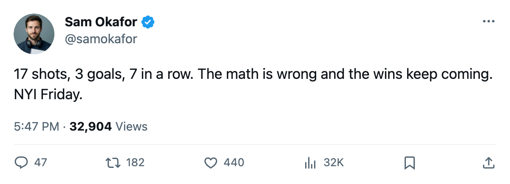

TOR
TORLEAFS 3, CANUCKS 1: Seven straight, 17 shots, and 3 days left
Toronto finishes its western swing 3 for 3 and turns toward New York Friday with what the calendar has as the trade deadline on Saturday
 Sam OkaforLeafs beat reporter · Queen City Telegram
Sam OkaforLeafs beat reporter · Queen City Telegram
 Mats Sundin89's Leafs beat
Mats Sundin89's Leafs beat  Vancouver Canucks 3-1 on Tuesday night in Vancouver, closing a 3-game western trip with 3 wins, 9 goals for, and 4 against. Toronto put 17 shots on goal against 27 by Vancouver. The win extends the streak to 7 games and lifts the record to 51-12-4, 116 points, 30 clear of
Vancouver Canucks 3-1 on Tuesday night in Vancouver, closing a 3-game western trip with 3 wins, 9 goals for, and 4 against. Toronto put 17 shots on goal against 27 by Vancouver. The win extends the streak to 7 games and lifts the record to 51-12-4, 116 points, 30 clear of  Boston Bruins in the [[Northeast]].
Boston Bruins in the [[Northeast]].
The road record reads 27-9. Toronto's away win total is 4 games above  Washington Capitals and
Washington Capitals and  New Jersey Devils, the next clubs in the East.
New Jersey Devils, the next clubs in the East.
New York comes to town
The  New York Islanders arrive Friday at 26-33-4, 70 points, on a 2-game slide. The season series is split 1-1-0 with Toronto outscoring New York 4-2. The Islanders have Justin Papineau71 out with a shoulder through 2005-04-11.
New York Islanders arrive Friday at 26-33-4, 70 points, on a 2-game slide. The season series is split 1-1-0 with Toronto outscoring New York 4-2. The Islanders have Justin Papineau71 out with a shoulder through 2005-04-11.  Mattias Weinhandl70 carries a wrist designation with a return date of 2005-03-18, the same day as this game.
Mattias Weinhandl70 carries a wrist designation with a return date of 2005-03-18, the same day as this game.
 Marian Gaborik96 leads the club at 85 points in 72 games, sitting atop the Bureau's Development Index risers at +6.
Marian Gaborik96 leads the club at 85 points in 72 games, sitting atop the Bureau's Development Index risers at +6.  Alexander Mogilny88 has 76 points in 68 games.
Alexander Mogilny88 has 76 points in 68 games.  Gary Roberts86, 38, carries 70 points in 72 games.
Gary Roberts86, 38, carries 70 points in 72 games.
The next stretch
Toronto's five-game run after New York: at  Columbus Blue Jackets on 2005-03-20, home to
Columbus Blue Jackets on 2005-03-20, home to  Buffalo Sabres on 2005-03-22, at Boston Bruins on 2005-03-24, at
Buffalo Sabres on 2005-03-22, at Boston Bruins on 2005-03-24, at  Carolina Hurricanes on 2005-03-25. The Columbus date carries two reacquaintances:
Carolina Hurricanes on 2005-03-25. The Columbus date carries two reacquaintances:  Josh Holden73 left Toronto for Columbus on 2005-01-25, and Andreas Stahle69 went the other way the same day.
Josh Holden73 left Toronto for Columbus on 2005-01-25, and Andreas Stahle69 went the other way the same day.
Boston Bruins returns  Joe Thornton83 to its lineup for the first time in this window, slotting him at first-line centre. Thornton is not on Toronto's schedule before 2005-03-24, and the gap is 30 points.
Joe Thornton83 to its lineup for the first time in this window, slotting him at first-line centre. Thornton is not on Toronto's schedule before 2005-03-24, and the gap is 30 points.
The deadline falls on 2005-03-19, between Friday's game and the Columbus trip.
